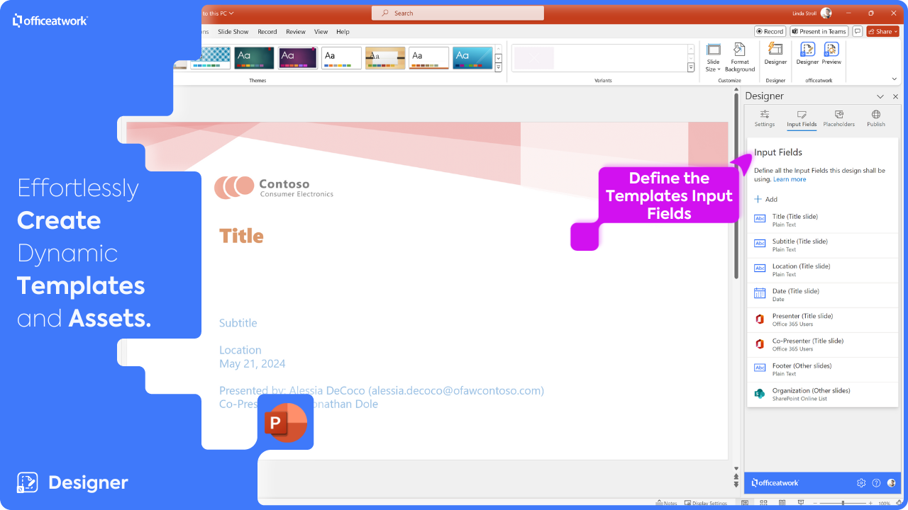
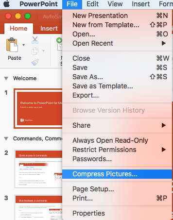
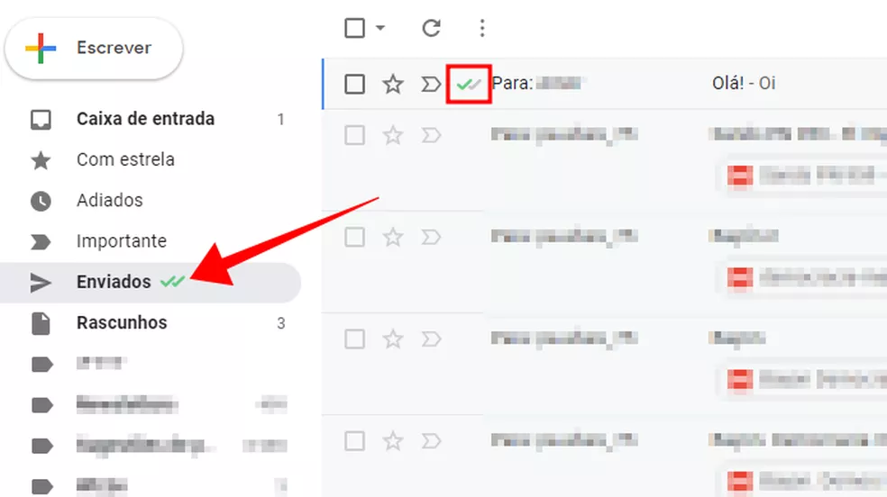
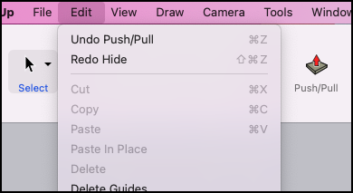
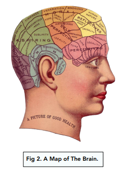

Disciplinas
INTERFACE HUMANO-COMPUTADOR Concluído
Materiais
Vídeo 2 - Interface Humano-Computador - Regras de design sendProf.ª ministrante: Alessandra Alaniz Macedo (UNIVESP)
Conteúdo
Regras de design de IHC
TIPOS DE REGRAS DE DESIGN.
Princípios:- Regras de design mais abstratas
- Baixa autoridade
- Aplicáveis a uma ampla gama de problemas (generalidade)
- Alta autoridade
- Uso limitado e regras específicas
- Baixa autoridade
- Aplicação mais geral
PRINCÍPIOS DE DESIGN
São regras de design mais abstratas que padrões
São regras de design com menos autoridade que padrões
Explicam sucesso de paradigmas
Podem gerar "repetibilidade" e paradigmas não
Podem ser mais genéricos ou específicos (como os princípios de usabilidade)
REGRAS DE OURO DE SHNEIDERMAN (1987),
1. Esforce-se pela consistência:
https://store-images.s-microsoft.com/image/apps.20794.40dd0f40-f33c-4ab3-a6b5-1cf200468c6c.aa7ac637-1c55-4dca-8286-1c635726aa82.48943bb9-57a7-4538-b627-f5492ac43f9d
2. Permita que usuários experientes usem atalhos:
https://filestore.community.support.microsoft.com/api/images/df27626e-c0f5-46e5-a8c8-8b4986d217e9?upload=true
3. Ofereça feedback informativo:
https://s2.glbimg.com/TGsxCsfFARrEy1r52qJUto9FHxQ=/0x0:695x390/984x0/smart/filters:strip_icc()/i.s3.glbimg.com/v1/AUTH_08fbf48bc0524877943fe86e43087e7a/internal_photos/bs/2019/E/s/HnGKeRSzARxjGNrJ7BJQ/captura-2019-01-31-18-56-59.png
4. Projete diálogos autocontidos:
- Insufficient funds to withdraw $100
- X.25 connection discarded due to network congestion. Local limits now in effect
5. Oferece prevenção e simplificação de erro:

https://encrypted-tbn2.gstatic.com/images?q=tbn:ANd9GcT_Fh3BiLH7gRdEfDOVNdBNuUzsjUMOt_3XNgInKjvrIo92gigF
6. Permitir reversão fácil de ações:
https://help.sketchup.com/sites/help.sketchup.com/files/images/su-eraser-menu.png
7. Suporte locus interno de controle:
https://i0.wp.com/portaldr.com/wp-content/uploads/2021/07/psicoterapia-psicologia-online-positiva-psicologo-depressao-ansiedade-insonia-6.jpg?fit=1200,675&ssl=1&resize=350,200
8. Reduza o uso da memória de curto prazo:
https://studymind.co.uk/wp-content/uploads/2022/05/1-36.png
OUTROS PRINCÍPIOS DE NORMAN
- 1. Visibilidade e Affordance
- 2. Bom modelo conceitual
- 3. Bom mapeamento
- 4. Feedback
- Os 3 Us Utilidade Usabilidade Ubiquidade
- 1- Visibilidade
- 2- Feedback
- 3- Restrições
- 4- Mapeamento
- 5- Consistência
- 6- Affordanc
PRINCÍPIOS PARA USABILIDADE
- 1-facilidade de aprendizagem
- previsibilidade
- sintetizabilidade
- familiaridade
- consistência
- generalizabilidade
- 2-flexibilidade
- iniciativa de diálogo
- multi-threading
- migração de tarefas
- substituibilidade
- personalização
- 3-robustez
- observabilidade
- recuperabilidade
- capacidade de resposta
- conformidade com a tarefa
PRINCÍPIOS: LIVRO SOBRAL/BENYON
- 1.Visibilidade
- 2. Consistência
- 3. Familiaridade
- 4. Affordance
- 5. Segurança e efetividade
- navegação
- controle
- feedback
- recuperação
- restrições
- 6. Adaptabilidade
- flexibilidade
- estilo
- sociabilidade
RIGHT 🡺
🡸 WRONG
AS HEURÍSTICAS DE USABILIDADE DE NIELSEN
1. Visibilidade do status do sistema
2.Comparação entre o sistema e o mundo real
3. Controle e liberdade do usuário
4. Consistência e padrões
5.Ajuda o user a reconhecer, diagnosticar e recuperar de erros
6. Prevenção de erros
7.Reconhecimento em vez de memorização
8. Flexibilidade e eficiência de uso
9.Design estético e minimalista
10.Ajuda e documentação
REGRAS DE DESIGN
Muitas regras parecem ter sentido comum. Algumas são resultado de estudos empíricos
- as heurísticas de Nielsen são baseadas na análise de fato de 249 problemas de usabilidade
Algumas são derivadas de caracterizações particulares da natureza da ação humana
- os princípios de Norman estão intimamente relacionados à sua teoria da ação
Algumas são reflexões da experiência
- as regras de Shneiderman - Essas regras devem ser aplicadas e contextualizadas
Referências:
Baranauskas e Rocha, Design e Avaliação de Interfaces Humano-Computador. Cap 1, pags 7-13, Cap 3, 122-124 2003.https://www.nied.unicamp.br/biblioteca/design-e-avaliacao-de-interfaces-humano-computador/
Santos, B. J. D. Interface Humano-Computador. Cap 1 - Introdução à IHC e seus benefícios, pags 13-17, 2019 https://integrada.minhabiblioteca.com.br/#/books/9788595027374/pageid/12 Acesso em: 11 Jul 2021